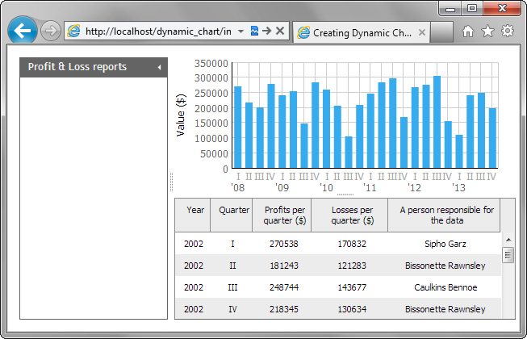

Now, we will add a chart that will represent data that we have specified in the grid. It's going to be a vertical bar chart that will display profits or losses per a specific period. By default, profits.
To create charts on the page, the DHTMLX library provides the dhtmlxChart component.
"index.html"
var chart = layout.cells("b").attachChart({
view:"bar", //defines the chart's type
value:"#data2#", //data property that the chart represents
color:"#36abee", //the color of the chart's bars
padding:{left:75, bottom:50, top:50, right:30},//padding of chart's content
yAxis:{start:0, step:50000, title:"Value ($)"}, //sets the vertical scale
xAxis:{ //sets the horizontal scale
template:function(obj){return "<span class='quarter'>"+obj.data1+
"</span>"+(obj.data1=="I"?" '"+obj.data0.substr(2,2):"")}
},
preset:"column", //applies the styling preset
border:0 //disables bars' borders
});
"index.html"
//grid.load("data/gridData.xml");
grid.load("data/gridData.xml",function(){
chart.parse(grid,"dhtmlxgrid"); });

Back to top